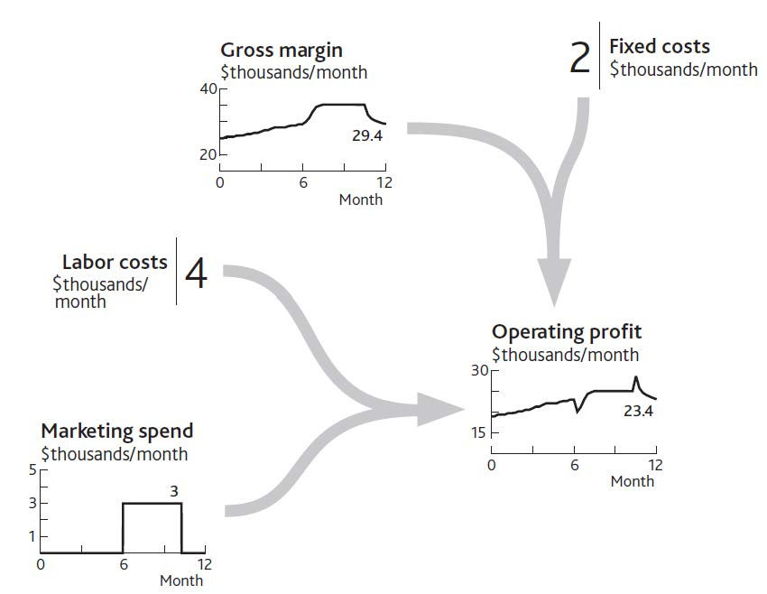

So far we have learned the following:
The next crucial question is, what drives the growth (inflowThe growth of or increase in resources.) and decline (outflowThe reduction in or decline of resources.) of resources?
There are three factors moving resources into and out of your organization:
In fact, most of your own decisions—at least those that are likely to affect performance into the future—work by affecting resource flows, either directly or indirectly. You recruit more salespeople to win customers faster, add service capacity to keep customers from leaving, take on engineers to develop products, dedicate human resource (HR) staff to hiring, and so on.
If we start training people today, for example, we do not instantly get better bottom-line performance. The training improves the overall skill of the group over whatever time it takes to cover everyone in the group. Only those people who have been trained can start to deliver improvements, and this takes time. The one impact we do see immediately, of course, is the extra cost! Consequently, it is all too common for organizations to decide on beneficial changes, only to abandon them because they do not see enough immediate benefit to continue. What often gets cut first when performance falters? Training and marketing!
Let us look back at what happened to your restaurant over the past 12 months. Figure 3.6 "The Separate Flows of Customers Into and Out of Your Regular Customer Group" showed the inflow and outflow of regular customers. The decisions involved were to increase marketing spending but then cut back later in the year (Figure 4.1 "Marketing Decisions Change the Inflow of Customers").
Note that we are not looking to explain the impact of marketing on profits, not even on sales. The immediate effect is on the customer win rate, and we need to focus on the numbers: the rate of marketing spending and how much impact it had on the rate of winning new customers. It also seems that our marketing decisions are not quite enough to account for the customer win rate, since we had a trickle of new customers even when we were spending nothing.
Figure 4.1 Marketing Decisions Change the Inflow of Customers

We must not forget that such a change in a resource flow is not the only consequence of our decisions. Many will have cost or revenue implications, too. In this case, marketing spending has an immediate impact on profits, as well as causing other changes (Figure 4.2 "The Impact of Changed Marketing Spending on Profits").
When you increased spending in month 7, profits dropped by the amount you decided to spend. Profits grew quickly after you implemented this decision, so something else must have happened. But the immediate effect was a sharp drop: no delays or bathtubs filling in this part of the system, just simple arithmetic. The same applies to the decision in month 10 to cut marketing spending. The profit rate immediately jumps by the $3,000 per month cut in marketing. Again, however, something else happens soon after to wipe out that profit increase.
Figure 4.2 The Impact of Changed Marketing Spending on Profits
Competitors and other factors also affect the flows of resources into and out of our business. Competitors can even help us develop resources, as we will see in Chapter 7 "Managing Rivalry for Customers and Other Resources". External influences are generally looked at under four categories:
We are often sloppy in our use of language about business, and since we have never been especially conscious of the bathtub behavior of resources there is a particular problem about levels and rates. We might discuss what we can do to increase the “level” of profits, say, or debate whether the “level” of marketing spending is sustainable. Wrong! Profits and marketing spending are both rates at which money is being made or spent; their units are dollars per month. The only factors that should properly be referred to as “levels” are resources, plus that rather special factor, price.
This may seem picky, but so long as we are inaccurate in the language we use, we will continue to misunderstand what is going on. And if we misunderstand, we will misdecide!
The systematic examination of these forces is known as PEST analysis. While the concept of PEST influences sounds right, that is not sufficient for strategy development. Once again, numbers matter. You need to understand the scale and timing of the changes affecting your future. Imagine you run a company producing electronic goods, and you face an economic downturn. You need to know roughly how severe it will be, at what rate it will remove potential consumers from your pool of resources, and to what level.
In addition, factors changing other markets can have powerful spin-off effects. TV viewing has fallen as viewers switched their time to online activities, with damaging consequences for advertising revenues. Internet usage in Europe has in turn been depleted by the time people spend sending text messages by mobile phone. These are both examples of quantifiable dynamics—that is, rates of change through time—concerning the influence of substitute products that feature in standard industry forces approaches to strategy (see Chapter 1 "Performance Through Time").
The most important point about what drives resource flows, however, is that current levels of resources determine the rate at which other resources fill up or drain away. This is the mechanism for which the system dynamics method is ideally suited (Sterman, 2000, chap. 8).
This is the reality of how resources work together, creating a system that can either perform strongly or constrain its own development. Interdependence can even bring about an organization’s self-destruction. Since we know that performance depends on resources, and that only flows of resource can alter these quantities through time, it follows that the only means by which management decisions can change your resources through time is by influencing what happens to the inflows and outflows.
However, as Chapter 2 "Resources: Vital Drivers of Performance" highlighted, you cannot build any resource without using resources already in place. This interdependence has two implications:
There are many examples of this principle:
In the cases listed above, if you had none of the first resource, the second would not grow at all unless some other resource could replace it. If you have no salespeople, for example, you will need agents, a Web site, or some other alternative to capture customers. If a charity has no donors, it will need government funding or some kind of endowment to carry on its work.
So how does a new business ever get started? It turns out that entrepreneurs too must have some stock of experience, contacts, and personal credibility to allow them to raise cash and hire their first staff. (Experience and credibility are intangible resources, which we will look at in Chapter 8 "Intangible Resources and Capabilities".)